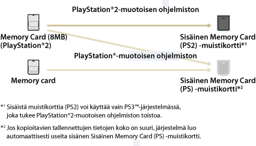

Pelit > PlayStation®2- ja PlayStation®-muotoisten ohjelmistojen pelaaminen > Memory card tallennettujen tietojen käyttäminen
Memory card tallennettujen tietojen käyttäminen
Memory Card -kortille (8 MB) (PlayStation®2) tai Memory Card -kortille tallennettujen tietojen käyttäminen pelin pelaamista varten edellyttää, että memory card tiedot kopioidaan kiintolevyllä olevalle sisäiselle memory card. Tietojen kopioimiseen on käytettävä muistikorttisovitinta (saatavana erikseen).
Huomautukset
- Jotkin PlayStation®2- ja PlayStation®-muotoiset ohjelmistot voivat käyttäytyä eri tavoin PS3™-järjestelmässä kuin PlayStation®2- tai PlayStation®-järjestelmissä, ja ne eivät ehkä toimi PS3™-järjestelmässä oikein.
- PlayStation®2-muotoisia ohjelmistoja ei myöskään voi käyttää joissakin PS3™-järjestelmissä. Lisätietoja on kohdassa [Toistettavat levytyypit], oman alueesi SCE-verkkosivustossa ja PS3™-järjestelmän mukana toimitetuissa asiakirjoissa.
1. |
Valitse |
|---|---|
2. |
Yhdistä muistikorttisovitin PS3™-järjestelmään ja aseta muistikortti laitteeseen. |
3. |
Valitse näytössä näkyvästä muistikortista kopioitavien tietojen kuvake ja paina sitten |
4. |
Valitse [Kopioi]. |
5. |
Paikkojen määrittäminen |
 (Peli) >
(Peli) >  (Memory Card (PS/PS2) -työkalu).
(Memory Card (PS/PS2) -työkalu). (Memory Card (PS))-
(Memory Card (PS))-  (Memory Card (PS2)) -kuvake.
(Memory Card (PS2)) -kuvake. (Luo uusi sisäinen Memory Card -muistikortti) ja luo sitten uusi sisäinen muistikortti näytön ohjeiden mukaan.
(Luo uusi sisäinen Memory Card -muistikortti) ja luo sitten uusi sisäinen muistikortti näytön ohjeiden mukaan.Vihjeitä
- Memory Card -kortille (8 MB) (PlayStation®2) tai Memory Card -kortille tallennetut tiedot kopioidaan sisäinen muistikortti alla näytetyllä tavalla.
- Joidenkin tallennettujen tietojen kopioiminen voi kestää useita minuutteja.
- Jos haluat kopioida kaikki PlayStation®2:n Memory Card -muistikortille (8 Mt) tai Memory Card -muistikortille tallennetut tiedot, valitse muistikortti vaiheessa 3, paina
 -näppäintä ja valitse sitten asetusvalikosta [Kopioi].
-näppäintä ja valitse sitten asetusvalikosta [Kopioi]. - Joidenkin tallennettujen tietojen kopioiminen saattaa olla kiellettyä. Kun käsittelet tällaisia tietoja PS3™-järjestelmässä, valitse vaiheessa 4 [Siirrä]. Tallennetut tiedot siirretään kiintolevylle, ja ne poistetaan muistikortilta.
- Voit siirtää tallennetut tiedot takaisin muistikortille jälkeenpäin.

Tallennettujen tietojen kopioiminen muistikortille
Voit kopioida PlayStation®2- tai PlayStation®-muotoisen ohjelmiston kovalevylle tallennetut tiedot Memory Card -muistikortille tai PlayStation®2:n Memory Card -muistikortille (8 Mt). Tietojen kopioimiseen on käytettävä muistikorttisovitinta (lisävaruste).
1. |
Valitse |
|---|---|
2. |
Liitä muistikorttisovitin PS3™-järjestelmään ja aseta muistikortti laitteeseen. |
3. |
Valitse niiden tallennettujen tietojen kuvake, jotka haluat kopioida, tallennuskohteesta |
4. |
Valitse [Kopioi]. |
 (Sisäinen Memory Card (PS) -muistikortti) tai
(Sisäinen Memory Card (PS) -muistikortti) tai  (Sisäinen Memory Card (PS2) -muistikortti), ja paina sitten
(Sisäinen Memory Card (PS2) -muistikortti), ja paina sitten Vihjeitä
- Useita sisäisen Memory Card -muistikortin tallennettuja kohteita ei voi kopioida yhdessä muistikortille.
- Joidenkin tallennettujen tietojen kopioiminen saattaa olla kiellettyä. Kun käsittelet tällaisia tietoja PS3™-järjestelmässä, valitse vaiheessa 4 [Siirrä]. Tallennetut tiedot siirretään kiintolevylle, ja ne poistetaan sisäiseltä muistikortilta.
- Voit siirtää tallennetut tiedot takaisin muistikortille jälkeenpäin.